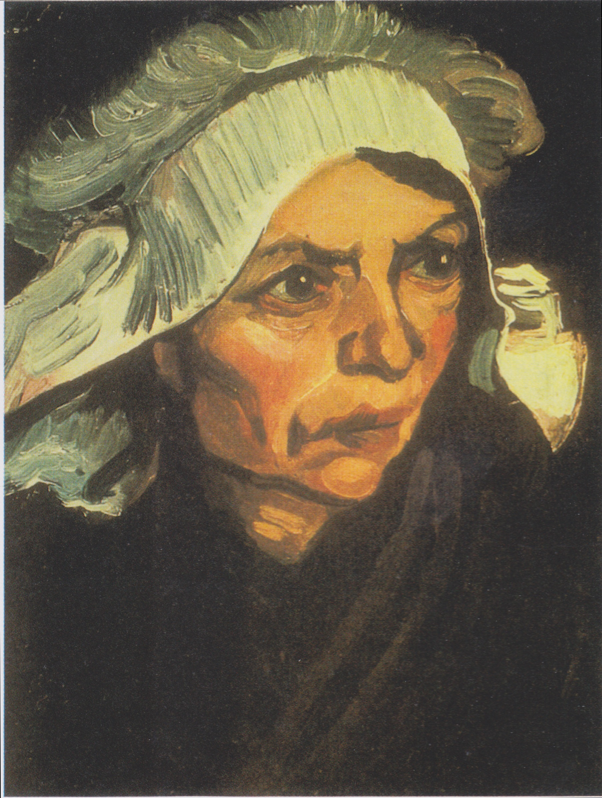
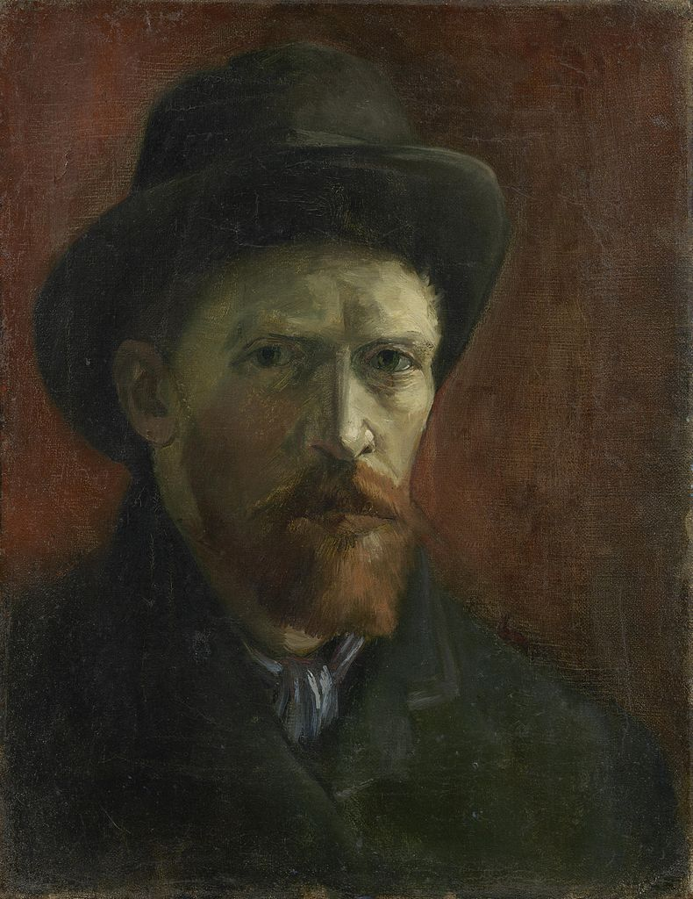

Potato Digging (1883, The Hague)
Vincent Van Gogh was fond of painting the poor. Like in his famous painting 'The Potato Eaters', it seems that the potato symbolizes the subjects' social standing.
The Potato Eaters (1885, Nuenen)
Potatoes are a recurring subject in Van Gogh's works.
This scene portrays living standards for poor people.
Art-critics are particularly fond of the light dynamics in this scene.
The Weaver (1884, Nuenen)
Yet another example of Van Gogh's fascination with manual labor.

Head of a Peasant Woman (1885, Nuenen)
Throughout 1885, Van Gogh made numerous portraits; it seemed to be his focus that year. Most of them portrayed peasants, like in this example.
Two Hands (1885, Nuenen)
Hands symbolize manual labor like nothing else. To portray hands is something that even filmmakers do to this day.
Still Life with Bible (1885, Nuenen)
Van Gogh made this painting after his father's death, and that's why the candles have stopped burning.
Religion was an important aspect of Van Gogh's life. He did goodwill projects for the church and was an aspiring pastor for some time.

A Self Portrait (1886)
From 1886 onwards, Van Gogh expanded the spectre of subjects in his paintings. For instance, this work is his first self-portrait with oil on canvas.
Celebrating The 14th of July in Paris (1886)
Another example of an expanding repetoire. The impressionistic style we see here culminated in the masterpieces he made at the end of his life - for which he is best known.
The Sower at Sunset (1888, Arles)
After a time of hyperrealistic paintings, Van Gogh got fond of impressionism, which was rather popular in France at the time. His friend and housemate Paul Gaugain had inspired him to explore on this style.
Starry Night (1889, close to Saint-Rémy-de-Provence)
Most of Van Gogh's famous works have an impressionistic style, like this one. The song Vincent / Starry Starry Night by Don McLean is made with regard to this painting.
Celebrating The 14th of July in Paris (1886)
The subject's location was recently discovered by a Dutch researcher. In a letter to his brother Van Gogh commented on this last painting of his: "My life has been torn at the very root". That may be why Van Gogh painted these roots from a village he used to live. (End of gallery)